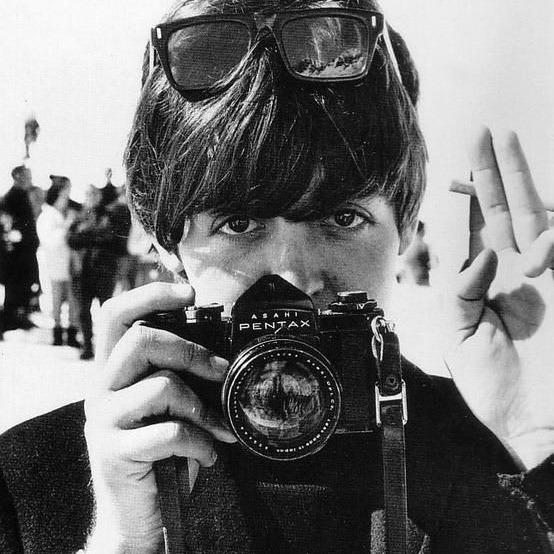

Las fotos perdidas de los Beatles


Paul McCartney lo deja claro
"En la nueva canción de Los Beatles con inteligencia artificial todo es real"


"En la nueva canción de Los Beatles con inteligencia artificial todo es real"